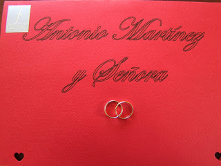

Cuánto cuesta organizar un matrimonio en Chile: ¡los gastos a considerar!
- Matrimonios.cl: Matrimonios, Matrimonio
- Matrimonio - Registro Civil
- Casarse por el civil en Chile, ¿Qué hay que hacer . - Bodas
- Cuánto cuesta organizar un matrimonio en Chile: ¡los gastos .
- Matrimonio en Chile - Wikipedia, la enciclopedia libre
- Venta Especial Bodas: Feria de Novios Mayo 2021
- Coronavirus Chile | El cura y los novios fueron detenidos en .
- Insólito: arrestan a un cura y a novios por realizar una boda .
- Los 10 mejores lugares de eventos para matrimonio en .
- Una Boda o Casamiento Tradicional en Chile - Pepe's Chile
Usamos cookies para personalizar el contenido. Al hacer clic o navegar en el sitio, aceptas nuestra . Política de cookies Magazine Lugares matrimonio Centros de eventos Restaurantes matrimonios Hoteles matrimonios Salones de eventos Parcelas Eventos Casonas Eventos Proveedores Banqueterías matrimonio Música y Animación matrimonio Luna de miel Peinados y Maquillaje Novias Fotógrafos y Video matrimonio Decoración matrimonios Florerías matrimonio Vestidos de novia Wedding planner Accesorios Novias Joyerías matrimonio Vestidos de Fiesta Invitaciones de matrimonio Otros proveedores Recuerdos de matrimonio Autos matrimonio Trajes novio Proveedores internacionales Lista de Novios Lista de Novios online Lista de novios para luna de miel Lista de invitados Webs Web de tu matrimonio CL ¡Ohhh! No hay resultados que coincidan con tu búsqueda ¿Quieres hacer un regalo? ¿Invitado? Buscar un matrimonio Antes del matrimonio Pedir matrimonio Planear el matrimonio Trámites matrimonio Ceremonia Matrimonios civiles Matrimonios religiosos Protocolo La celebración Destination weddings El banquete Lugares Moda nupcial El novio Invitadas Accesorios invitadas Tiendas vestidos fiesta Vestidos de fiesta La novia Accesorios novia Ateliers y tiendas de vestidos de novia Ramos de novia Vestidos de novia Belleza Maquillaje Peluquería Tratamientos y Bienestar Servicios del matrimonio Despedida de soltera Foto y vídeo Invitaciones y cartelería Joyas matrimonio Música y animación Recuerditos Transporte Wedding planner Decoración Estilos de decoración Flores Luna de miel Destinos luna de miel Planear viaje de luna de miel Después del matrimonio Decoración de la casa Vida en pareja Real weddings Actualidad Celebrities Eventos Lugares Galerías Luxury Weddings Ver todo ¡Ohhh! No hay resultados que coincidan con tu búsqueda ¿Quieres hacer un regalo? ¿Invitado? Buscar un matrimonio Publicidad Magazine Antes del matrimonio Planear el matrimonio Cuánto cuesta organizar un matrimonio en Chile: ¡los gastos a considerar!
Cuánto cuesta organizar un matrimonio en Chile: ¡los gastos a considerar!
¿Estas pesando en casarte pero no sabes cómo calcular el presupuesto? Nuestros expertos te orientan sobre todos los costos que debes considerar para saber cuánto sale un matrimonio.
Créditos: Tabare Fotografia & Films por Catalina Arancibia 12-03-2021 Planear el matrimonio Recomendaciones Novios ChileOrganizar un matrimonio tiene mucho de romanticismo y también de diversión: la fiesta, el maquillaje, la elección del traje, etc. Son aspectos esenciales que debes tener presentes, pero también tiene una parte muy racional y de la que depende todo: el dinero. Muchas veces habrás escuchado: “ No nos ca samos porque es muy caro” o “Sólo nos casamos por el civil para ahorrar” . Pero… ¿Cuánto vale realmente un matrimonio? La pregunta tiene tantas respuestas como posibilidades hay en el mundo, ya que no existe un precio único. Para definir cuánto cuesta casarse en Chile , las opciones van desde los presupuestos más austeros a otros ilimitados dignos de estrellas de Hollywood . Publicidad
En Zankyou hicimos el siguiente ejercicio: imaginamos un matrimonio de 150 invitados (entendemos que por la situación actual, tardaremos en volver a grandes bodas) y conversamos con nuestros expertos para que en base a su experiencia nos den valores que te orienten y ayuden a calcular cuánto vale organizar un casamiento en Chile . ¡Muy atentos a estas observaciones!
guardar Créditos: Martin Carrasco PhotographyDescarga gratis el eBook de tu boda
Partimos de lo general a lo particular y consultamos con CAR eventos , wedding planner especialista en la organización de matrimonios. Los wedding planner organizan todo lo referente al matrimonio , desde la fiesta al vestido de novias y esto es lo que nos dijeron:
La fiesta : incluyendo local, comida y cena tres tiempos, audio, luces, atención de garzones y decoración base, el precio puede partir desde los 35 mil pesos por persona. Vestidos de novia: Tienen un amplio rango de precios, desde los 300 mil a un millón y medio de pesos o más, aunque hoy también existe la posibilidad de arrendar trajes y abaratar costos.Estilo nupcial: ¿De qué factores depende el precio de tu vestido de novia?
Trajes de novio: Entre los 200 mil y los 700 mil pesos. Revisa también Trajes de novio 2020: descubre las nuevas tendencias y triunfa en tu gran día . Luna de miel: Este ítem varía en base al tiempo y al lugar que se elija, sin embargo, hay muchas ofertas de agencias de viajes que pueden partir en los 500 mil pesos.¿No te quieres perder las últimas novedades para tu boda?
Suscríbete a nuestra newsletter
Si la boda tendrá características de boda multitudinaria o gran evento, el rango que hay que manejar es entre 9 a 10 millones de pesos, aconseja el experto de CAR Eventos .
Además de un wedding planner, también existe la posibilidad de contratar cada servicio profesional por separado y en ese caso los costos podrían ser los siguientes:
guardar Créditos: Lised MárquezEl banquete
Para este ítem contactamos a Dominga Eventos , especialistas en banquetes, menaje y decoración de matrimonios. Al preguntarles cuánto sale un matrimonio en Chile, ellos nos comentan que el precio varía en función de la amplitud del menú contratado , el cual puede incluir aperitivo, cóctel, entrada, fondo, buffet de postres o asado, barra abierta, trasnoche… Se pueden hacer todas las combinaciones posibles , incluyendo o sacando agregados. A esto hay que sumar la decoración que en manos de una experta como Dominga Eventos siempre es personalizada. El costo para banquetes parte de 30 mil pesos más IVA por persona.
Por su parte, Virna Oñate Torres- Abanico Eventos de Fundo los Cóndores, San Bernardo se preocupa de entregar un servicio integral que deja a los novios preparados para su gran día, con todos los detalles coordinados. Su servicio contempla varias alternativas que permiten a los novios encontrar su estilo y lograr una fiesta de matrimonio más personalizada , muy cercana al ideal de cada pareja. Esta empresa organiza matrimonios que oscilan entre los 100 y los 450 invitados al banquete, con precios a partir de los 47 mil pesos. Virna Oñate ofrece una completa asesoría en todos los aspectos involucrados en esta celebración, partiendo desde la locación, que en el caso del Fundo Los Cóndores incluye iglesia, además de elementos decorativos, pista de baile de ajedrez, fotografía y video, en fin, todo lo necesario para realizar una fiesta de matrimonio que será recordada por todos.
guardar Créditos: Fundo los Cóndores, San BernardoLa belleza de la novia
Para muchas, uno de los factores determinantes, que pueden hacer variar cuánto sale un matrimonio. Rose Di Silvestre se dedica al maquillaje, peinado, tocados y ramos de novia. En base a su amplia experiencia en el rubro asegura que es muy importante que la persona contratada acuda donde tú estés. Por ello, un factor que influye en el precio es qué tan lejano es el sector al que debe desplazarse el profesional . Los centros de belleza a veces ofrecen precios más económicos, pero la experiencia es diferente. No es un servicio personalizado y es la novia quien debe ir al lugar.
El precio también cambia dependiendo de si el evento es en temporada alta o baja , oscilando entre los 55 mil y 100 mil pesos por el concepto de prueba de maquillaje + prueba de peinado + maquillaje + peinado el día del matrimonio . Los costos pueden reducirse al eliminar algunos servicios. El perfilado de cejas viene incluido.
Tendencias en cejas 2018: luce perfecta y natural con estos consejos
Para el caso de la manicure los precios están entre los 8 y 12 mil pesos dependiendo de si es tradicional o permanente. El ramo de novia: uno de flores naturales tiene un precio promedio de 45 mil pesos, cuyo valor puede disminuir o aumentar en base al tipo y cantidad de flores utilizadas y accesorios adicionales como cristales, perlas, etc. El tocado: el valor de este accesorio varía dependiendo del material, tamaño y materiales. Pueden fluctuar desde los 7 mil pesos para algo sencillo o superar los 30 mil pesos en los de mayor complejidad. Todos los diseños de Rose Di Silvestre son exclusivos y hechos a mano. guardar Créditos: Andrea Medrano (Pajaritos en la cabeza)Fotografía
Por último pero no menos relevante es el servicio de fotografía en manos de quienes queda una parte muy importante: los recuerdos que perdurarán para siempre . Para calcular los costos, hay que considerar el estilo y extensión del servicio.
En Tabaré Fotografía se especializan en el fotoperiodismo y su trabajo está enfocado acapturar todos los eventos del día del matrimonio de manera documental y artística. Su actividad comienza desde la preparación de los novios el día del matrimonio y tras la edición de todo el material capturado, los novios recibirán de manera digital todas las fotos de su boda también. Además, por un pequeño precio adicional al servicio fotográfico, esta pareja de fotógrafos ofrece un servicio de diagramación e impresión de hermosos photobooks para tener un recuerdo impreso del matrimonio.
Por su parte, Gustavo Droguett Film & Photography , especialista fotográfico y filmográfico en la cobertura de celebraciones y matrimonios comenta que un servicio muy solicitado hoy es el fotorreportaje , que consiste en registros sin interrumpir a los novios , lo que resulta muy cómodo para la pareja. En este formato el fotógrafo debe velar para que las fotos queden perfectas en tiempo real , sin dirigir las tomas como un director de cine.
Es importante estudiar bien el mercado y elegir un profesional que sepa captar la esencia de tu gran día, no deben dejarse llevar solo por el precio, pues lo verdaderamente importante es el resultado de su trabajo. ¡Es algo que conservarás por siempre! Para calcular cuánto invertir en este servicio, el profesional Marco Cuevas Photography nos indica que “la mayoria parte sus valores en 600.000 hasta 1.500.000 promedio”.
guardar Créditos: Gustavo Droguett Film & PhotographyYa lo sabes. Si estás calculando los costos de tu boda te recomendamos además asesorarte por nuestros profesionales en Zankyou para aclarar todas tus dudas y ¡armar un matrimonio a tu medida! También te puede interesar Cómo calcular el presupuesto del matrimonio. ¡Atención a las pautas!
Selecciona a los proveedores que quieres contactar
Fundo los Cóndores, San Bernardo Parcelas Eventos Tabare Fotografia & Films Fotógrafos Dominga Eventos Banquetería matrimonio Lised Marquez Fotografía Fotógrafos Gustavo Droguett Film & Photography Fotógrafos Car Eventos Wedding planners Marco Cuevas fotografo Fotógrafos Rose Di Silvestre Maquillaje y Peinado Maquillaje y peluquería Pajaritos en la Cabeza Fotógrafos Martin Carrasco Photography Fotógrafos PublicidadComentarios (2)
Danos tu opinión
Lista de novios Zankyou: ¡Recibe el dinero de tus regalos en efectivo!
DescúbreloGana hasta $7.500.000 para tu matrimonio
¡Quiero participar! PublicidadLo mejor de Planear el matrimonio
1 Cómo organizar tu matrimonio paso a paso: ¡el calendario definitivo! 2 Cómo organizar un matrimonio temático: ¡5 pasos clave para plasmar tu estilo! 3 ¿Cómo sobrevivir a un matrimonio con lluvia? ¡Cinco pasos para tener todo bajo control! 4 Ceremonia simbólica de matrimonio: ¡11 consejos para vivir el mejor de tus días! 5 Todas las parejas olvidan incluir estas nueve cosas en su presupuesto de bodas. ¡Aspectos que no pueden fallar! 6 ¿Cómo evitar las estafas durante la organización del matrimonio? 7 Cómo calcular el presupuesto de mi matrimonio: ¡atención a estas 5 pautas! 8 Cinco claves para planificar un matrimonio a distancia 9 Cuánto cuesta organizar un matrimonio en Chile: ¡los gastos a considerar! 10 ¿Cómo elegir la fecha de tu matrimonio? En 5 pasos te lo contamos 11 ¿Cómo hacer la lista de invitados para el matrimonio? Cinco claves para que no falte nadie 12 Protocolo para bodas con los padres divorciados: ¿cómo sentar a tus papás cuando están separados? 13 Cómo organizar un matrimonio multitudinario: ¡los cinco pasos más importantes! 14 Invitados de boda sin pareja: claves para hacer que se sientan cómodos durante el matrimonio 15 Cómo organizar un matrimonio low-cost. ¡Las mejores ideas para invertir en lo más esencial! 16 ¿Cómo repartir los gastos del matrimonio? 17 10 ideas para recordar en tu matrimonio a los que ya no están. ¡Siempre presentes en tu corazón! Ver todo Ver todo Ver menos PublicidadTambién te puede interesar
8 ideas para que tu matrimonio al aire libre sea un éxito
Planear el matrimonio 18-06-2021 Muchas parejas optarán en las próximas temporadas por una celebración de matrimonio al aire libre. ¡Descubre qué es lo que necesitas para que sea perfecta!Cómo organizar tu matrimonio paso a paso: ¡el calendario definitivo!
Planear el matrimonio 17-06-2021 ¿Cómo organizar una boda en 12 meses? Descubre la guía definitiva para planificar tu matrimonio, comienza la cuenta atrás un año antes. Te contamos qué hacer hasta el día antes de tu boda. ¡Tu matrimonio será un éxito!Estos profesionales convertirán tu matrimonio en un día épico
Planear el matrimonio 15-06-2021 Para tener éxito en tu matrimonio debes rodearte de los mejores profesionales del sector. ¡Descubre cuáles no pueden faltar!Cómo organizar un matrimonio temático: ¡5 pasos clave para plasmar tu estilo!
Planear el matrimonio 08-06-2021 Elegir el estilo o la temática de tu matrimonio no es tarea fácil. En Zankyou aclaramos tus dudas y te damos cinco consejos clave para encontrar tu ambientación perfecta. ¡Toma nota!¿Cómo sobrevivir a un matrimonio con lluvia? ¡Cinco pasos para tener todo bajo control!
Planear el matrimonio 22-05-2021 La lluvia puede hacer que tu matrimonio consiga un sello especial que no tengan otros matrimonios. Sigue los consejos de los expertos para que no desluzca tu día.Locación y catering, elementos clave para triunfar en tu boda. ¡Te decimos cómo acertar!
Planear el matrimonio 21-05-2021 Toma nota de estos útiles consejos para acertar con la elección del lugar de celebración y el banquete. ¡Tus invitados recordarán para siempre el día de tu boda!Ceremonia simbólica de matrimonio: ¡11 consejos para vivir el mejor de tus días!
Planear el matrimonio 18-05-2021 ¿Te gustaría tener una ceremonia de bodas original y diferente? Disfruta de una ceremonia simbólica que refleje tu personalidad y la de futuro esposo, ¡elige el ritual que más les interesa y disfruta del gran día a tu manera!Todas las parejas olvidan incluir estas nueve cosas en su presupuesto de bodas. ¡Aspectos que no pueden fallar!
Planear el matrimonio 12-05-2021 Organizar un casamiento no es una tarea sencilla. Para hacerlo correctamente debemos estar pendientes de muchos puntos que muchas parejas olvidan incluir en el presupuesto de bodas. Aquí algunos de los más importantes.Ver todo
Lo mejor de Planear el matrimonio
1 Cómo organizar tu matrimonio paso a paso: ¡el calendario definitivo! 2 Cómo organizar un matrimonio temático: ¡5 pasos clave para plasmar tu estilo! 3 ¿Cómo sobrevivir a un matrimonio con lluvia? ¡Cinco pasos para tener todo bajo control! 4 Ceremonia simbólica de matrimonio: ¡11 consejos para vivir el mejor de tus días! 5 Todas las parejas olvidan incluir estas nueve cosas en su presupuesto de bodas. ¡Aspectos que no pueden fallar! 6 ¿Cómo evitar las estafas durante la organización del matrimonio? 7 Cómo calcular el presupuesto de mi matrimonio: ¡atención a estas 5 pautas! 8 Cinco claves para planificar un matrimonio a distancia 9 Cuánto cuesta organizar un matrimonio en Chile: ¡los gastos a considerar! 10 ¿Cómo elegir la fecha de tu matrimonio? En 5 pasos te lo contamos 11 ¿Cómo hacer la lista de invitados para el matrimonio? Cinco claves para que no falte nadie 12 Protocolo para bodas con los padres divorciados: ¿cómo sentar a tus papás cuando están separados? 13 Cómo organizar un matrimonio multitudinario: ¡los cinco pasos más importantes! 14 Invitados de boda sin pareja: claves para hacer que se sientan cómodos durante el matrimonio 15 Cómo organizar un matrimonio low-cost. ¡Las mejores ideas para invertir en lo más esencial! 16 ¿Cómo repartir los gastos del matrimonio? 17 10 ideas para recordar en tu matrimonio a los que ya no están. ¡Siempre presentes en tu corazón! Ver todoEncuentra los mejores profesionales para tu matrimonio
Santiago Metropolitana
Valparaíso Región
Bío-Bío Región
Araucania Región
Los Lagos Región
Antofagasta Región
Coquimbo Región
Maule Región
O'Higgins Región
Los Ríos Región
Tarapaca Región
Magallanes y la Antártica Chilena Región
Arica y Parinacota Región
Aysén Región
Atacama Región
Ver todo
Ver más artículosTe interesa para organizar tu matrimonio
Santiago Metropolitana (3570) Valparaíso Región (822) Bío-Bío Región (490) Araucania Región (314) Los Lagos Región (297) Antofagasta Región (293) Coquimbo Región (263) Maule Región (253) O'Higgins Región (218) Los Ríos Región (158) Tarapaca Región (147) Magallanes y la Antártica Chilena Región (102) Arica y Parinacota Región (100) Aysén Región (68) Atacama Región (53) Cómo elegir vestido novia Cómo elegir fotógrafo boda Cómo elegir peinado y maquillaje novia Cómo elegir lugar celebración Lencería novia SantiagoDescubre más de Zankyou
Visita nuestro Facebook Síguenos en Instagram Encuentra inspiraciónInformación
Empleo ¡Estamos contratando! Tarifas y Condiciones Generales Condiciones proveedores Condiciones Generales Privacidad FAQ ContactoDescarga la app gratis
Añade tu empresa
Solicita invitación para añadir tu empresa App para profesionales Herramientas para promocionar tus servicios Conoce a nuestro equipo Zankyou Chile. Escríbenos vía WhatsAppNovios: +52 55 6809 9205
Proveedores: +34 605 89 95 47
Gana hasta $7.500.000 para tu matrimonio
¡Quiero participar! Chile © 2008 - 2021, Zankyou Ingresar Portada Magazine Antes del matrimonio Ceremonia La celebración Moda nupcial Belleza Servicios del matrimonio Decoración Luna de miel Después del matrimonio Real weddings Actualidad Lugares Galerías Luxury Weddings Lugares matrimonio Centros de eventos Restaurantes matrimonios Hoteles matrimonios Salones de eventos Parcelas Eventos Casonas Eventos Proveedores Banqueterías matrimonio Música y Animación matrimonio Luna de miel Peinados y Maquillaje Novias Fotógrafos y Video matrimonio Decoración matrimonios Florerías matrimonio Vestidos de novia Wedding planner Accesorios Novias Joyerías matrimonio Vestidos de Fiesta Invitaciones de matrimonio Otros proveedores Recuerdos de matrimonio Autos matrimonio Trajes novio Proveedores internacionales Lista de Novios Lista de Novios online Lista de novios para luna de miel Lista de invitados Web de tu matrimonio Buscar un matrimonio ChileSíguenos en Facebook
Ideas, consejos, ofertas, concursos todo para tu matrimonio
Ya soy fan en Facebook, no vuelvas a pedírmelo


Mauris vulputate dolor
Rutrum fermentum nibh in augue praesent urna congue rutrum.
Etiam posuere